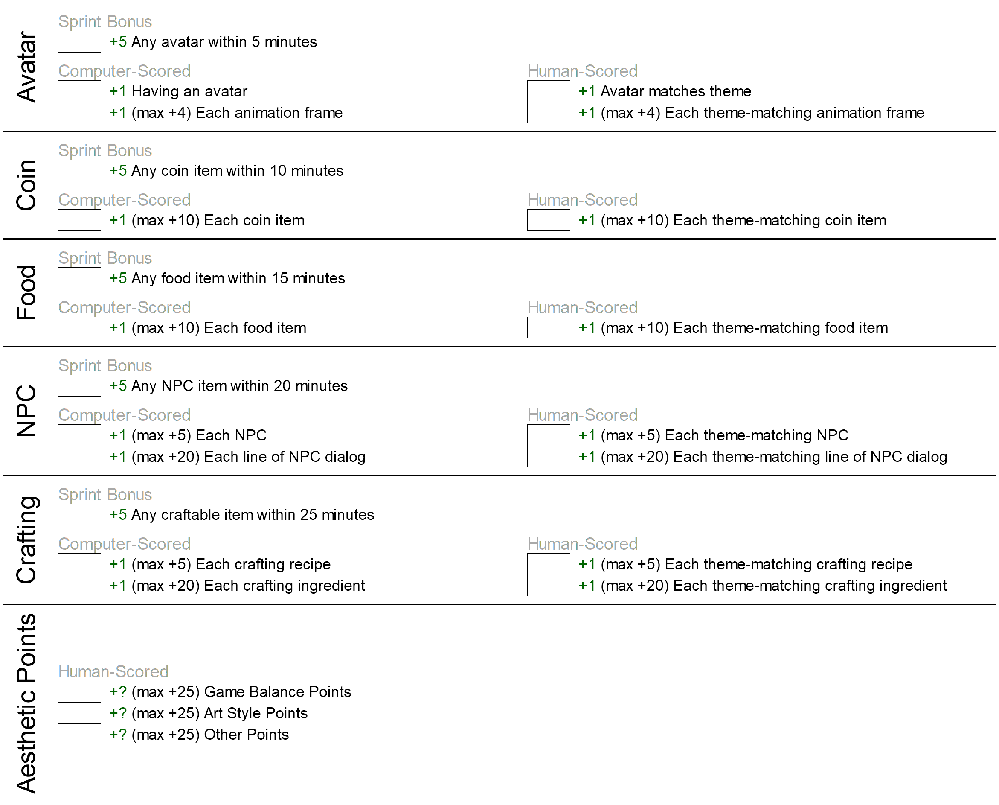
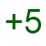
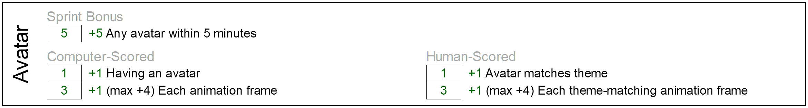
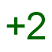
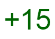

3 How are Games Scored?
Judges will use a semi-automated process score games. It is partially automated, to facilitate fast judging. But part of the score is subjective, to prevent competitors "gaming the system" – i.e. just jumping through the hoops but without actually creating a fun, playable game.
The scoring process for the upcoming Game Jam is explained on this page.
3.1 Overview
Game Type: Survival Game with Crafting
Scorable Features:
Avatar
Inventory Items
Food
Non-Player Characters
Crafting/Recipes
3.2 Score Sheet
For convenience, we’ve created this scoresheet for players, coaches, spectators, and judges to use. It is intended to serve as a quick overview of the scoring system. (For more details, though, see the following sections.)

3.3 Avatar
The game must have an avatar that can be moved with the arrow keys. The avatar must lose health over time and must gain health by eating food.
Sprint Bonus:
 Have a player within the first 5 minutes of competition.
Have a player within the first 5 minutes of competition.
(NOTE: To claim this sprint bonus, a competitor must signal a judge and demonstrate a working game with an avatar. Signals must be made before the 5 minute mark in order to gain the sprint bonus points.)
Computer-Scored Points:
 for having an avatar at all
for having an avatar at all per animation frame. Max
per animation frame. Max
Human-Scored Points:
 for having an avatar that matches the theme.
for having an avatar that matches the theme. per animation frame that matches the theme. Max
Although the definition of "matching the theme" is always subjective and up to the judges’ discretions, some rules of thumb are:
If the prompt implies a main character, the avatar should look like that.
Animation frames should suggest locomotion. Example: If the avatar is a space ship, a theme-matching animation might imply some kind of propultion system. Example: If the avatar is a unicorn, a theme-matching animation might imply a unicorn walking.
3.4 Example
Suppose the Game Jam prompt is announced to be: "Slimes vs Unicorns. Slimes have taken over the forest, and the unicorns must learn to survive in the desert."
Suppose that within the first 5 minutes of the competition, Marco creates a avatar that looks like a red circle. This qualifies him for a +5 sprint bonus.
Suppose he goes on to create three animation frames of unicorn walking, which his avatar use while walking and replaces the red circle with these animation frames. (The sprint bonus has already been awarded, so he does not lose the bonus points.)
Assuming nothing changes about the avatar before the end of the Game Jam, Marco’s Avatar score would end up like this:

3.5 Food
The game must have food items that the avatar can consume in-game.
Sprint Bonus:
 Have a food item within the first 10 minutes of competition.
Have a food item within the first 10 minutes of competition.
(NOTE: To claim this sprint bonus, a competitor must signal a judge and demonstrate a working game with a food item. Signals must be made before the 10 minute mark in order to gain the sprint bonus points.)
Computer-Scored Points:
 for each food item in game. Max
for each food item in game. Max
Human-Scored Points:
 for each food item that matches the theme. Max
for each food item that matches the theme. Max 
Although the definition of "matching the theme" is always subjective and up to the judges’ discretions, some rules of thumb are:
If the prompt implies a main character, the food should be something that avatar might "eat". Example: If the avatar is a spaceship, some "food" might be a barrel of fuel. Example: If the avatar is a unicorn, some food might be berries.
Any food items should seem like they belong in the world. A barrel of fuel probably doesn’t belong in a world full of unicorns. (The exception is, of course, if the unicorn is a robotic unicorn – in which case perhaps a barrel of fule does match the theme – but berries would not.)
3.6 Example
Suppose (as in the example in the previous section) that Marco creates three food items:
Prickly Pears, which give the avatar health
Sand Bread, which gives the avatar  health
Prickly Pear Pie, which gives the avatar  health
Also, suppose he created the berries within the first 10 minutes of the competition. This would qualify him for a sprint bonus.
Assuming nothing changes related to food items before the end of the competition, the final food score would look like:

That would be a total of  points. Added to his
previous score of
points. Added to his
previous score of  , that would be
, that would be  points so far!
points so far!
3.7 Non-Food Items
The game must have non-food items that can be picked up and used for crafting.
Computer-Scored Points:
* +1 for each non-food item in game. Max +10. * +5 sprint bonus. Implement at least one non-food item within the first 15 minutes of the competition.
Human-Scored Points:
* +1 per non-food item for theme cohesion. Max +10
3.8 Example
Suppose we continue our example from the previous section. Marco creates on non-food item – a Sand Grinding Rock. But suppose he loses some time because he must track down a bug in his code. He ends up completing his Sand Grinding Rock by the 16-minute mark. This means he cannot get the sprint bonus in this category.
However, he does recieve +1 for having an item and +1 for the fact that a Sand Grinding Rock does sound like something a unicorn might need to survive in a desert.
That’s +2 in this category. He’s at +32 so far.
3.9 Non-Player Characters
The game must have Non-Player Characters (NPCs).
Computer-Scored Points:
* +1 for each NPC in game. Max +5. * +1 for each line of dialog an NPC has (Max +4 per NPC). * +5 sprint bonus. Implement at least one NPC within the first 20 minutes of the competition.
Human-Scored Points:
* +1 per NPC for theme cohesion. Max +5. * +1 for each line of dialog an NPC has that is cohesive with the theme (Max +4 per NPC).
3.10 Example
Suppose, in our running example, Marco creates 1 NPC by the 19-minute mark.
The NPC is a desert nomad with two lines of dialog about the weather in the desert and one line about how to make Prickly Pear Pie.
Marco would receive the sprint bonus of +5, along with +1 for having an NPC and +3 for its lines of dialog. Since the NPC looks it belongs in the desert, Marco would also get an additional +1. And since the dialog lines are all theme-cohesive, he would get an additional +3.
That’s a total of: +13. He now has +45 total.
3.11 Crafting/Recipes/Tech-tree
The game must have "recipes", allowing new items to be created from existing ones.
A recipe involves three things:
* Inputs. A list of input items. E.g. marshmallows, chocolate, and crackers. * Output. A single output item. E.g. a chocolate s’more. * Trigger. An in-game entity that serves as the place where the recipe can be triggered. E.g. a campfire.
Note that the word "recipe" does not imply that the inputs or outputs must be food. Here’s another example:
* Inputs. A list of input items. E.g. wood and matches. * Output. A single output item. E.g. a campfire. * Trigger. An in-game entity that serves as the place where the recipe can be triggered. E.g. a firepit.
And yes, the output of one recipe can become either the inputs of another recipe or even the trigger for another recipe. For example, to make s’mores, you may have to first produce a campfire.
Computer-Scored Points:
* +1 for each recipe in game. Max +10. * +1 for each ingredient in a recipe. Max +4 per recipe. * +5 sprint bonus. Implement at least one recipe within the first 25 minutes of the competition.
Human-Scored Points:
* +1 per recipe for theme cohesion. Max +10 * +1 for each theme-cohesive ingredient in a recipe. Max +4 per recipe.
Note that all recipes must be craftable in game.
3.12 Example
Suppose, in our running example, Marco creates two recipes:
* Triggered at the cooking cauldron: Prickly Pears + Sand Bread can make Prickly Pear Pie. * Triggered at the cooking cauldron: Sand + Sand Grinding Rock makes Sand Bread
These recipes form a chain (one is the input to another)
<Tree or chain? Can we simplify this?? [>